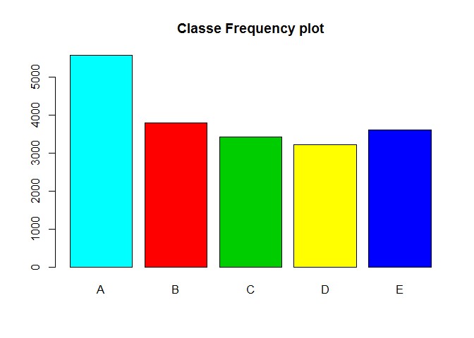

The main objective of this report is to explore and evaluate the Jawbbone UP, Nike FuelBand, and Fitbit Database and predict the manner in which user’s performed exercise sequences.
In order to predict the manner each user performed unilateral dumbell biceps curls based on data from accelerometers on the belt, forearms, arm, and dumbell of 6 participants. There are five possible methods that are captured in this analysis as listed below:
A: based on Specification B: pushing the elbows to the front position C: lifting the dumbell half the distance D: keeping the dumbell half the distance E: pushing hips to the front position
Model was built on the following criterions:
Crossvalidation was used to evaluate the built model. To ensure the accuracy was close to 100%. It is noted that the dependent variable or response is known to be “classe” variable in the training set. Accuracy was used to select the optimal model using the largest value. The final value used for the model was mtry = 27.
Evaluation of the Prediction model tested 20 cases succesfully.
library(caret)## Warning: package 'caret' was built under R version 3.1.1 ## Use to allow text to override the default wrapping width.
options(width=120)
library(knitr)## Warning: package 'knitr' was built under R version 3.1.1 library(VIM)## Warning: package 'VIM' was built under R version 3.1.1 library(randomForest)## Warning: package 'randomForest' was built under R version 3.1.1 ## Use to makes useful test and training tables
library(pander)## Warning: package 'pander' was built under R version 3.1.1 setwd("~/practical machine learning/") ## Process raw data
training <- read.csv("pml-training.csv", na.strings=c("NA",""))
testing <- read.csv("pml-testing.csv", na.strings=c("NA",""))
dim(training)## [1] 19622 160 #head(training)
dim(testing)## [1] 20 160 #head(testing)
training[1:5, c('user_name', 'classe', 'num_window', 'roll_belt', 'pitch_belt')]## user_name classe num_window roll_belt pitch_belt
## 1 carlitos A 11 1.41 8.07
## 2 carlitos A 11 1.41 8.07
## 3 carlitos A 11 1.42 8.07
## 4 carlitos A 12 1.48 8.05
## 5 carlitos A 12 1.48 8.07 sum(is.na(training))## [1] 1921600 t1 <- table(colSums(is.na(training)))
t2 <- table(colSums(is.na(testing)))
pandoc.table(t1, style ="grid", justify ='left', caption = 'Training data column NA frequencies')##
##
## +-----+---------+
## | 0 | 19216 |
## +=====+=========+
## | 60 | 100 |
## +-----+---------+
##
## Table: Training data column NA frequencies pandoc.table(t2, style ="grid", justify ='left', caption = 'Testing data column NA frequencies')##
##
## +-----+------+
## | 0 | 20 |
## +=====+======+
## | 60 | 100 |
## +-----+------+
##
## Table: Testing data column NA frequencies ##Training
columnNACounts <- colSums(is.na(training))
tidy.Columns <- columnNACounts >=19000
tidy.training.data <- training[!tidy.Columns]
sum(is.na(tidy.training.data))## [1] 0 tidy.training.data <-tidy.training.data[, c(7:60)]##Testing
columnNACounts <- colSums(is.na(testing))
tidy.Columns <- columnNACounts >=20
tidy.testing.data <- testing[!tidy.Columns]
sum(is.na(tidy.testing.data))## [1] 0 tidy.testing.data <-tidy.testing.data[, c(7:60)] ##Explore data
s <- summary(tidy.training.data$classe)
pandoc.table(s, style ="grid", justify ='right', caption = 'Classe Frequencies')##
##
## +------+------+------+------+------+
## | A | B | C | D | E |
## +======+======+======+======+======+
## | 5580 | 3797 | 3422 | 3216 | 3607 |
## +------+------+------+------+------+
##
## Table: Classe Frequencies ## plot(tidy.training.data$classe,col=rainbow(5),main ="classe frequency plot")
plot(tidy.training.data$classe,col=c("cyan","red","green3", "yellow", "blue"),main ="Classe Frequency plot")
partition <- createDataPartition(y= tidy.training.data$classe, p= .75, list = FALSE)
training.data <-tidy.training.data[partition, ]
testing.data <- tidy.training.data[-partition, ] train.Inds <-sample(nrow(tidy.training.data), 3000)
training.data <- tidy.training.data[train.Inds, ] ##Model uses trainingset of ##variables from the initial vlaue of ##. Cross Validation is used as train control method.
model <- train(classe ~ ., data=training.data, method = "rf", prox = TRUE,
trControl = trainControl(method = "cv", number =5, allowParallel=
TRUE))
model## Random Forest
##
## 3000 samples
## 53 predictor
## 5 classes: 'A', 'B', 'C', 'D', 'E'
##
## No pre-processing
## Resampling: Cross-Validated (5 fold)
##
## Summary of sample sizes: 2399, 2401, 2400, 2400, 2400
##
## Resampling results across tuning parameters:
##
## mtry Accuracy Kappa Accuracy SD Kappa SD
## 2 1 1.0 0.008 0.010
## 27 1 1.0 0.007 0.008
## 53 1 0.9 0.007 0.009
##
## Accuracy was used to select the optimal model using the largest value.
## The final value used for the model was mtry = 27. ##model <- randomForest(formula = classe ~ ., data = training.data, importance = TRUE) training_pred <- predict(model, training.data)
confusionMatrix(training_pred, training.data$classe)## Confusion Matrix and Statistics
##
## Reference
## Prediction A B C D E
## A 875 0 0 0 0
## B 0 626 0 0 0
## C 0 0 494 0 0
## D 0 0 0 478 0
## E 0 0 0 0 527
##
## Overall Statistics
##
## Accuracy : 1
## 95% CI : (0.999, 1)
## No Information Rate : 0.292
## P-Value [Acc > NIR] : <2e-16
##
## Kappa : 1
## Mcnemar's Test P-Value : NA
##
## Statistics by Class:
##
## Class: A Class: B Class: C Class: D Class: E
## Sensitivity 1.000 1.000 1.000 1.000 1.000
## Specificity 1.000 1.000 1.000 1.000 1.000
## Pos Pred Value 1.000 1.000 1.000 1.000 1.000
## Neg Pred Value 1.000 1.000 1.000 1.000 1.000
## Prevalence 0.292 0.209 0.165 0.159 0.176
## Detection Rate 0.292 0.209 0.165 0.159 0.176
## Detection Prevalence 0.292 0.209 0.165 0.159 0.176
## Balanced Accuracy 1.000 1.000 1.000 1.000 1.000Sample accuracy
## sample accuracy
testing_pred <- predict(model, testing.data)
confusionMatrix(testing_pred, testing.data$classe)## Confusion Matrix and Statistics
##
## Reference
## Prediction A B C D E
## A 1390 19 1 3 0
## B 0 915 18 0 6
## C 2 13 824 19 3
## D 1 1 6 782 22
## E 2 1 6 0 870
##
## Overall Statistics
##
## Accuracy : 0.975
## 95% CI : (0.97, 0.979)
## No Information Rate : 0.284
## P-Value [Acc > NIR] : < 2e-16
##
## Kappa : 0.968
## Mcnemar's Test P-Value : 1.09e-08
##
## Statistics by Class:
##
## Class: A Class: B Class: C Class: D Class: E
## Sensitivity 0.996 0.964 0.964 0.973 0.966
## Specificity 0.993 0.994 0.991 0.993 0.998
## Pos Pred Value 0.984 0.974 0.957 0.963 0.990
## Neg Pred Value 0.999 0.991 0.992 0.995 0.992
## Prevalence 0.284 0.194 0.174 0.164 0.184
## Detection Rate 0.283 0.187 0.168 0.159 0.177
## Detection Prevalence 0.288 0.191 0.176 0.166 0.179
## Balanced Accuracy 0.995 0.979 0.977 0.983 0.982 answers <- predict(model, tidy.testing.data)
answers <- as.character(answers)
answers## [1] "B" "A" "B" "A" "A" "E" "D" "B" "A" "A" "B" "C" "B" "A" "E" "E" "A" "B" "B" "B" pml_write_files = function(x){
n = length(x)
for(i in 1:n){
filename = paste0("problem_id_",i,".txt")
write.table(x[i],file=filename,quote=FALSE,row.names=FALSE,col.names=FALSE)
}
}
pml_write_files(answers) Note that the echo = TRUE parameter was added to the code chunk to prevent printing of the R code that generated the plot.